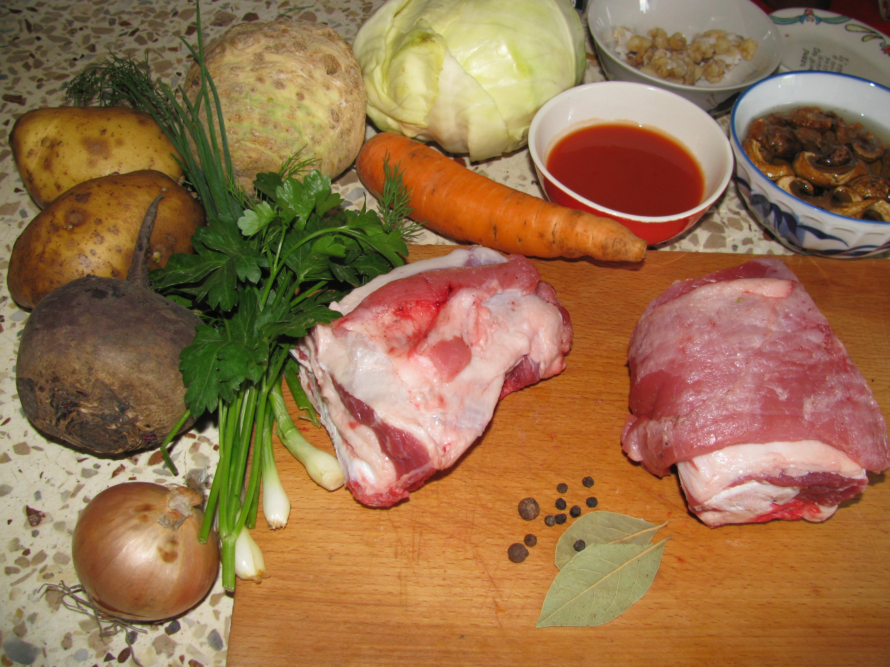
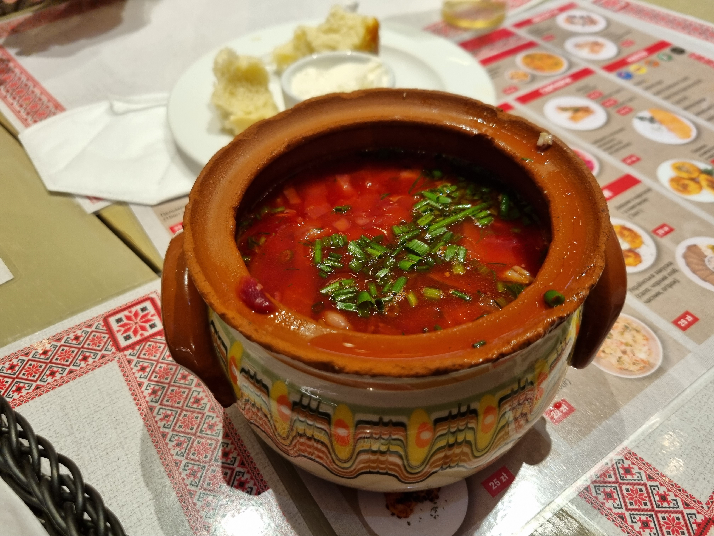
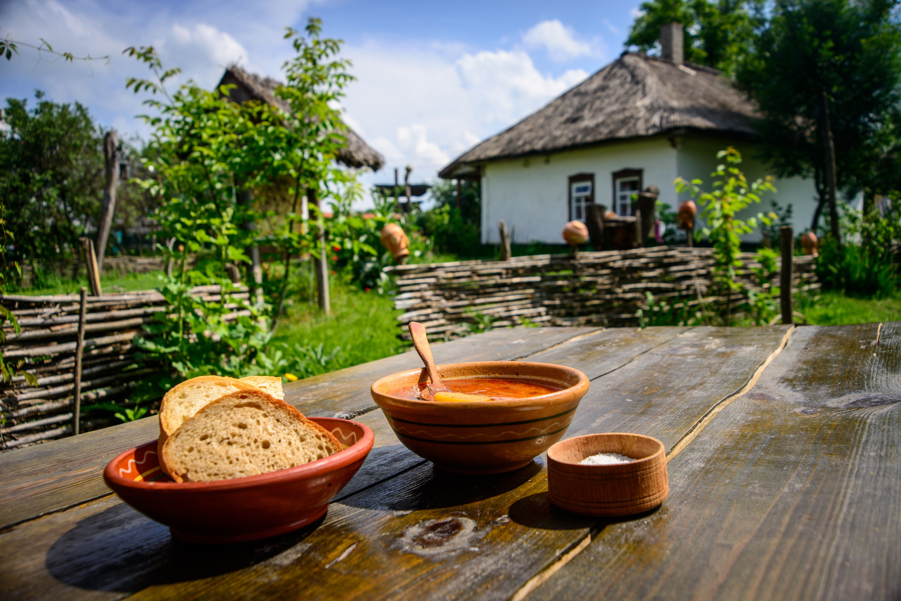
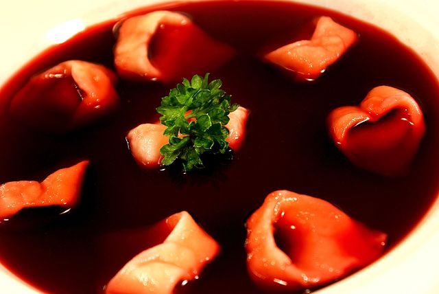
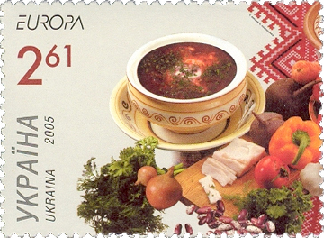
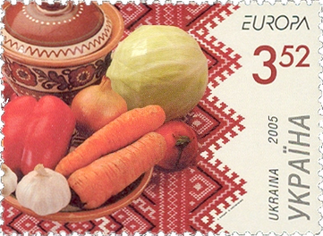
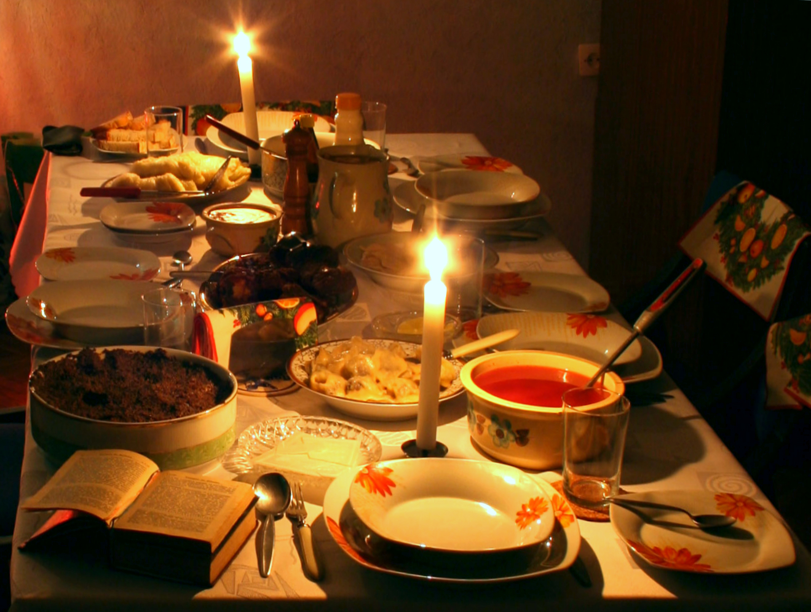

Borscht

Borschtis a sour soup, made with meat stock, vegetables and seasonings, common in Eastern Europe and Northern Asia. In English, the word "borscht" is most often associated with the soup's variant of Ukrainian origin, made with red beetroots as one of the main ingredients, which give the dish its distinctive red color. The same name, however, is also used for a wide selection of sour-tasting soups without beetroots, such as sorrel-based green borscht, rye-based white borscht, and cabbage borscht.
In 2022, the United Nations Educational, Scientific, and Cultural Organization (UNESCO) announced that it had placed borscht on the List of Intangible Cultural Heritage in Need of Urgent Safeguarding due to the risk that russia's invasion posed to the soup's status as an element of Ukraine's cultural heritage. The new status means Ukraine could now apply for special funds to finance projects promoting and protecting the dish.
Etymology
The name ultimately derives from the word borshch, which is common to East Slavic languages, such as Ukrainian. Common hogweed (Heracleum sphondylium) was the soup's principal ingredient before it was replaced with other vegetables, notably beetroot in the Ukrainian version.
Sometimes, borscht can be found as barszcz (a Polish word for borscht) or borshch (transliteration of Cyrillic "борщ"), although these are still foreign words in English and not natively used.
The English spelling borscht comes from Yiddish באָרשט (borsht), as the dish was first popularized in North America by Yiddish-speaking Ashkenazi Jews from Eastern Europe.
Ingredients and preparation
The stock is typically made by boiling meat, bones, or both. Beef, pork or a combination of both are most commonly used, with brisket, ribs, shank and chuck considered to give the most flavorful results, especially if cooked on a high flame. Marrow bones are considered best for the bone stock. Meat stock is usually cooked for about two hours, whereas bone stock takes four to six hours to prepare. Meat and bones are usually removed afterwards and the meat is only added back into the soup about 10–15 minutes before the borscht is done. Some recipes call for smoked meats, resulting in a distinctively smoky borscht, while others use poultry or mutton stock. Fasting varieties are typically made with fish stock to avoid the use of meat, while purely vegetarian recipes often substitute forest mushroom broth for the stock.
The vegetables most commonly added to borscht are

- beetroots,
- white cabbage,
- carrots,
- parsley root,
- potatoes,
- onions,
- tomatoes.
Beet sour
The dominant tastes in borscht are sweet and sour. This combination is traditionally obtained by adding beet sour. The sour is made by covering sliced beetroots with lukewarm preboiled water and allowing bacteria to ferment some of the sugars present in beetroots into dextran (which gives the liquid a slightly viscous consistency), mannitol, acetic acid and lactic acid. Stale rye bread is often added to hasten the process, but usually omitted in Jewish recipes, as chametz (leavened bread) would make the sour unfit for Passover meals. Sugar, salt and lemon juice may also be added to balance the flavor. After about 2–5 days (or 2–3 weeks without the bread), the deep red, sweet and sour liquid may be strained and is ready to use. It is added to borscht shortly before the soup is done, as prolonged boiling would cause the tart flavor to dissipate.
Variations

Ukrainian

As the home country of beetroot borscht,Ukraine boasts great diversity of the soup's regional variants, with virtually every oblast' having its own recipe. Differences between particular varieties may regard the type of stock used (meat, bone, or both), the kind of meat (beef, pork, poultry, etc.), the choice of vegetables and the method of cutting and cooking them. For example, although the typical recipe calls for beef and pork, the Kyiv variant uses mutton or lamb as well as beef, while in the Poltava region, the stock for borscht is cooked on poultry meat, that is, chicken, duck or goose. The use of zucchini, beans and apples is characteristic of the Chernihiv borscht; in this variant, beetroots are sautéed in vegetable oil rather than lard, and the sour taste comes solely from tomatoes and tart apples. The Lviv borscht is based on bone stock and is served with chunks of Vienna sausages.
Polish
As well as the thick borschts described above, Polish cuisine offers a ruby-colored beetroot bouillon known as barszcz czysty czerwony, or clear red borscht. It is made by combining strained meat-and-vegetable stock with wild mushroom broth and beet sour. In some versions, smoked meat may be used for the stock and the tartness may be obtained or enhanced by adding lemon juice, dill pickle brine, or dry red wine. It may be served either in a soup bowl or – especially at dinner parties – as a hot beverage in a twin-handled cup, with a croquette or a filled pastry on the side. Unlike other types of borscht, it is not whitened with sour cream. 
Barszcz wigilijny, or Christmas Eve borscht, is a variant of the clear borscht that is traditionally served during the Polish Christmas Eve supper. In this version, meat stock is either omitted or replaced with fish broth, usually made by boiling the heads cut off from fish used in other Christmas Eve dishes. The mushrooms used for cooking the mushroom broth are reserved for uszka (small filled dumplings), which are then served with the borscht.
Jewish
Ashkenazi Jews living in Eastern Europe adopted beetroot borscht from their Slavic neighbors and adapted it to their taste and religious requirements. As combining meat with milk is proscribed by kosher dietary laws, Jews have developed two variants of the soup: meat (fleischik) and dairy (milchik). The meat variant is typically made from beef brisket (pork is never used) and cabbage, while the dairy one is vegetarian, blended with sour cream or a mixture of milk and egg yolks. Both variants typically contain beetroots and onions, and are flavored with beet sour, vinegar or citric acid for tartness and beet sugar for sweetness. Galician Jews traditionally liked their borscht particularly sweet. Jewish borscht may be served either hot or cold, typically with a hot boiled potato on the side.In prewar Eastern Europe it was traditionally put up to ferment around Purim so that it would be ready four weeks later for the Passover holiday.
History
Precursors
Borscht derives from a soup originally made by the Slavs from common hogweed (Heracleum sphondylium, also known as cow parsnip), which lent the dish its Slavic name. Growing commonly in damp meadows throughout the north temperate zone, hogweed was used not only as fodder (as its English names suggest), but also for human consumption – from Eastern Europe to Siberia, to northwestern North America.
Diversification
With time, other ingredients were added to the soup, eventually replacing hogweed altogether, and the names borshch or barszcz became generic terms for any sour-tasting soup. In 19th-century rural Poland, this term included soups made from barberries, currants, gooseberries, cranberries, celery or plums.
Novel ingredients: beets, tomatoes and potatoes
Beet (Beta vulgaris), a plant native to the Mediterranean Basin, was already grown in antiquity. Only the leaves were of culinary use, as the tapered, tough, whitish and bitter-tasting root was considered unfit for human consumption. It is likely that beet greens were used in variants of green borscht long before the invention of the beetroot-based red borscht. Beet varieties with round, red, sweet taproots, known as beetroots, were not reliably reported until the 12th century and did not spread to Eastern Europe before the 16th century.
Haute cuisine
Polish aristocrats used to employ celebrated French chefs, who later presented their dishes as foreign curios back in France. One of the first French chefs to do so was Marie-Antoine Carême, who worked briefly for Emperor Alexander I in 1819. In his take on borscht, the original russian soup served only as inspiration for an extravagant haute cuisine dish with an air of eastern exoticism. Apart from vegetables and beet sour, his recipe calls for a roast chicken, a fried chicken, a duck, a piece of veal, an oxtail, a marrow bone, one pound of bacon, and six large sausages, and suggests serving with beef quenelles, deviled eggs and croûtons.
Global spread
Over the course of the 19th and 20th centuries, borscht's popularity spread beyond its Slavic homeland, largely due to such factors as territorial expansion of the russian Empire, russia's growing political clout and cultural stature, and waves of emigration out of the country. As russia grew to cover most of northern and central Eurasia, borscht was introduced to the cuisines of various peoples inhabiting the territories both within and adjacent to the empire, from Finland to the Caucasus and Iran, to Central Asia and China, to Alaska.
Borscht's westward expansion was less successful; Germans used to scoff at the soup along with other East European fare. What helped the spread of borscht, however, was the popularization by various haute cuisine chefs who had their own dishes to present to West Europe.
Borscht in the USSR
In the Soviet Union, borscht was one of the most popular everyday dishes. It was described by James Meek, a British correspondent in Kyiv and moscow, as "the common denominator of the Soviet kitchen, the dish that tied together ... the high table of the Kremlin and the meanest canteen in the boondocks of the Urals, ... the beetroot soup that pumped like the main artery through the kitchens of the east Slav lands". Among Soviet leaders, the Ukrainian-born Leonid Brezhnev was especially partial to borscht, which his wife continued to personally cook for him even after they had moved into the Kremlin.
In culture


As a ritual dish

In Poland and Ukraine, borscht is usually one of the dishes served at a Christmas Eve dinner. Celebrated after the first star has appeared in the sky on December 24 (Roman Catholic) or January 6 (Greek Catholic), it is a meal which is at the same time festive and fasting, a multicourse affair (traditionally, with twelve distinct dishes) that excludes ingredients of land-animal origin. Christmas Eve borscht is, therefore, either vegetarian or based on fish stock and is not typically mixed with sour cream. In Ukraine, the soup contains vegetables that are sautéed in vegetable oil rather than lard, as well as beans and mushrooms. It may be also thickened with wheat flour dry-roasted in a pan instead of the usual roux. The Polish version of Christmas Eve borscht is a clear ruby-red broth. Both Ukrainian and Polish variants are often served with uszka.
As an ethnic dish
In its currently most popular, beet-based version, borscht most likely originated in what is now Ukraine. Borscht's role as a staple of everyday Ukrainian diet is reflected in the Ukrainian saying, "borscht and porridge are our food" (compare the equivalent russian saying, where borscht is replaced with shchi). The hearty soup in which the beetroot is just one of sundry vegetables, as opposed to the typically Polish clear beet broth, is still known in Poland as "Ukrainian borscht".